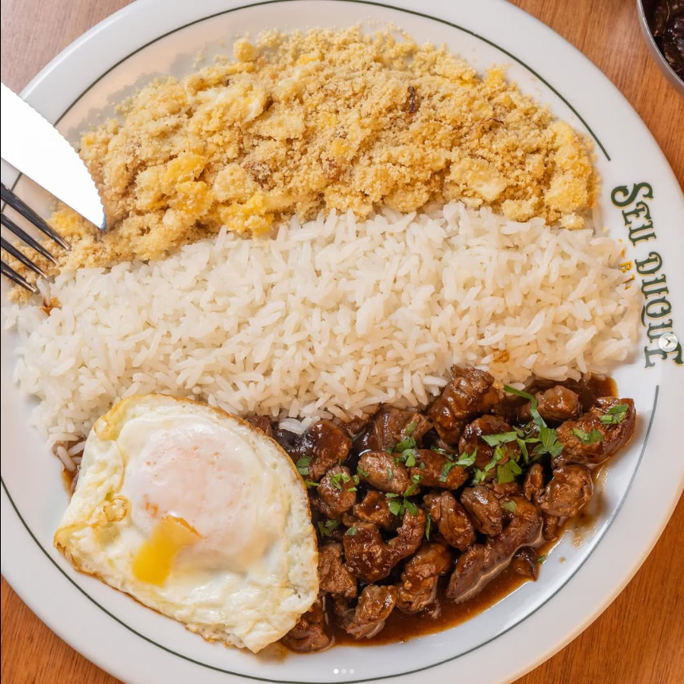
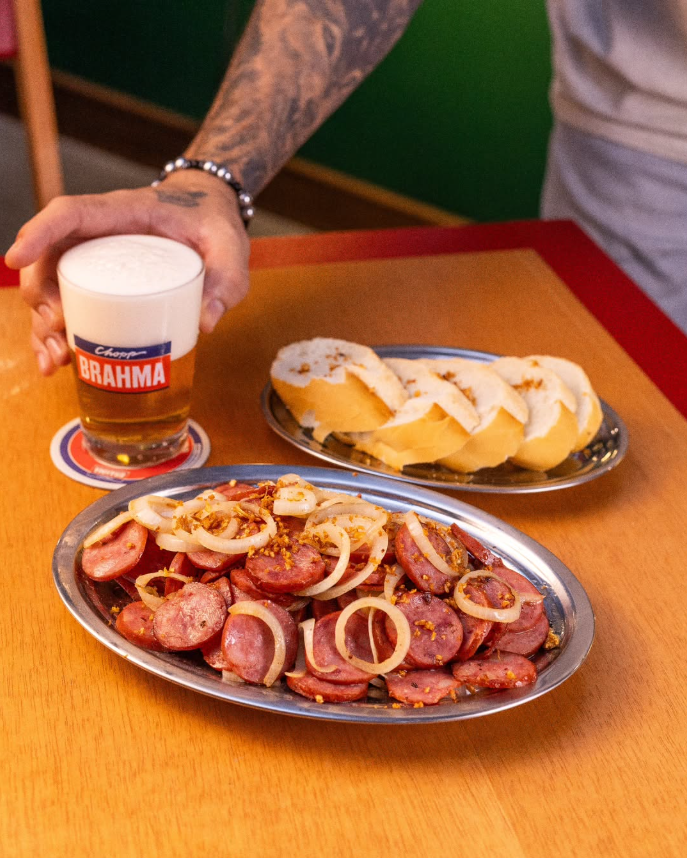
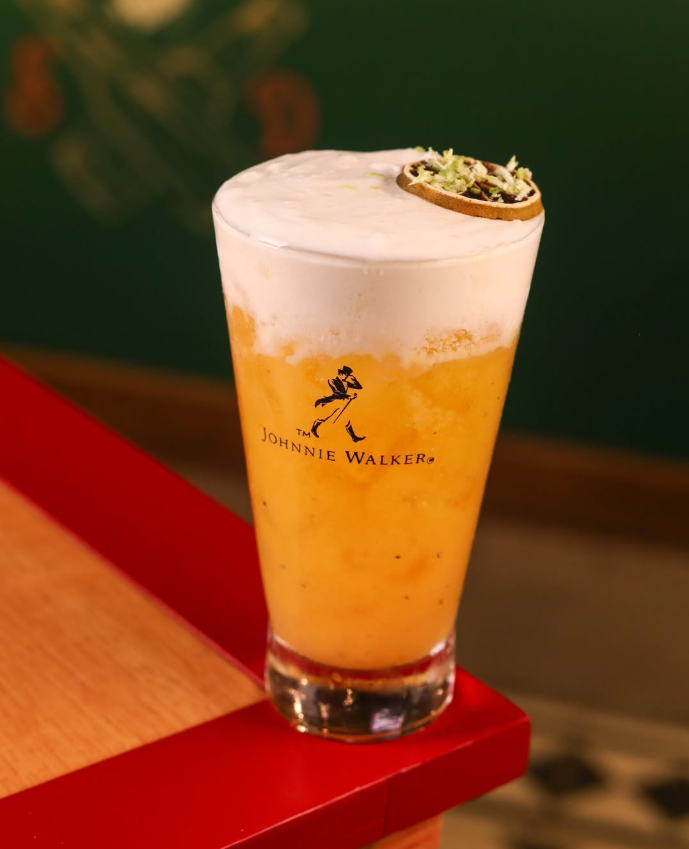

Refeições
Bife a Cavalo
Bife a cavalo é um prato da culinária portuguesa e brasileira composto basicamente por um bife com um ovo em cima, tipicamente acompanhado de batas e, por vezes, de salada. O nosso bife a cavalo sai com uma batata frita crovante e feita na hora.
Petiscos
Calabresa Acebolada
Saboreie a deliciosa Calabresa Acebolada cheia de sabor do Seu Duque, uma verdadeira maravilha. Deixe-se envolver pelo aroma irresistível da calabresa com cebolas douradas e refogadas.
Bebidas
Michelada
Mergulhe a bora do copo em sal kosher e adicione alguns cubos de gelo, se usar, e despeje o suco de limão e cerveja. Decore com uma fatia de limão e aproveite!